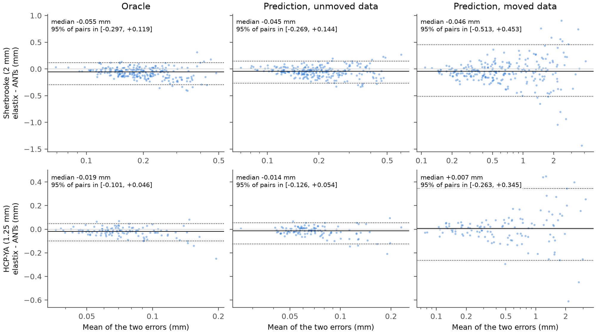
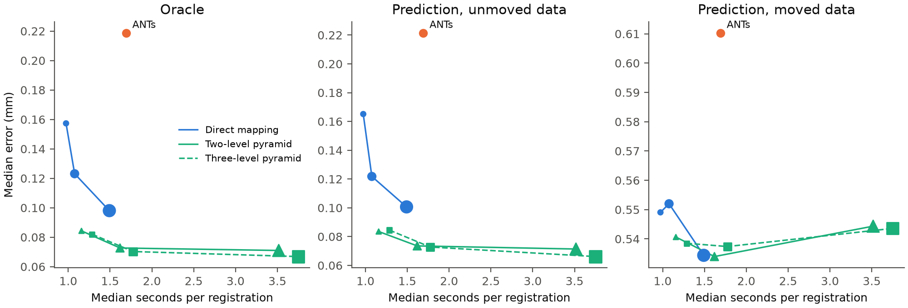

Elastix’s settings, mapped from ANTs¶
NiFreeze registers each volume with ANTs, which reads the images from files on disk and runs as a subprocess, through nipype. Passing the images through the filesystem costs far more time than passing them in memory, and elastix (itk-elastix) takes them from memory, from Python (#590). This report gathers the experiments behind elastix’s settings in NiFreeze: how ANTs’ default settings were mapped onto elastix’s components (#670), whether a multi-resolution pyramid or more iterations improve on that direct mapping (#675), and two checks on real images.
Throughout, the direct mapping names elastix’s settings that reproduce ANTs’ schedule component by component: it is a rigid (six degrees of freedom) registration, as ANTs’ is.
The questions¶
Mapped component by component from ANTs’ rigid default (
b0-to-b0_level0) and affine second pass (dwi-to-dwi_level1), does elastix register the phantoms as accurately as ANTs, and how fast? (#670)Do a multi-resolution pyramid, more iterations or the preconditioned optimizer widen elastix’s lead over ANTs? (#675)
Do the answers hold on real images: b=0 images under large rotations, and diffusion-weighted volumes with their real noise?
The direct mapping¶
Each ANTs stage becomes one elastix parameter map
(the elastix sections of src/nifreeze/registration/config/rigid.yaml and
affine.yaml).
The values were read from the sources of ANTs 2.4.4, ITK 5.3.0 and elastix 5c71a233
(the build of itk-elastix 0.25.4), which the pull request
(#674) cites by file and line.
ANTs |
Elastix |
|---|---|
|
|
|
|
|
|
Shrink factor k, which shrinks only the virtual grid that ANTs samples |
Full-resolution images; the samples thinned by k3 |
Smoothing sigma in voxels |
|
|
|
|
|
Winsorizing and histogram matching |
The same, in the backend, with ANTs’ parameters |
Fixed-image mask |
|
ANTs’ optimizer has no counterpart in elastix, so #670 compared two:
elastix’s ConjugateGradient with Polak-Ribière directions, as ANTs’ line search
uses, and the adaptive stochastic gradient descent, elastix’s default.
Data¶
- Phantoms (Synthetic reference data)
The development volumes of Sherbrooke (64, every third of 192) and HCP-YA (30, every ninth of 270), in the rigid-motion copies at 0.5, 1, 2 and 4 mm and degrees (motion seed 0, no eddy currents, noise 20261029). Each volume is registered to three fixed images: the noise-free volume at the true position (the oracle), and gqi-krr’s held-out predictions from the unmoved and from the moved data (
nifreeze.analysis.registration). #670 runs both protocols and both stages (the affine second pass starts from the same tool’s rigid estimate): 1,128 pairs. #675 runs Sherbrooke’s rigid stage only, as #614 tunes: 768 pairs.- The suite’s real b=0 images
The b=0 averages of
hcphanddwiin the test data, each registered to itself resampled (cubic) under the 216 known motions oftest_ANTs_config_b0(0, 0.1 or 0.3 rad about each axis, 0 or 1 mm along each), anddwi.h5’s b=0 under the 7 motions ofdwi_motion.h5. The two images of each pair differ in neither noise nor contrast.- Stanford HARDI
DIPY’s preprocessed Stanford HARDI (150 volumes at b=2000, 2 mm), taken as aligned. Copies move every volume by
perturbation_plan()(a random axis and direction per volume, seed 0, about the brain’s centroid) at 1, 2, 4 and 8 mm and degrees, throughperturb(), with an unmoved copy as the control. Every fifth volume (30) is registered to the same three kinds of fixed image; the oracle is the volume itself, with the same noise.
Every registration runs with one thread and seed 12345, and gets the values ANTs reads today: the 12-bit window of the moving volume.
How the errors are measured¶
The error of a registration is the mean, within the brain mask, of
displacements_within_mask() between the estimated
and the true fixed-to-moving transform, in mm (The error audit).
Two settings are compared with experiments.paired_comparison(), paired by
volume and motion and resampled within motions, with a margin of 0.01 voxel: the
interval of the median difference gives “better”, “worse”, “not worse” or
“inconclusive”.
Time is the wall time of one registration, with one thread: for ANTs it includes
writing the inputs, for elastix its preprocessing in Python.
Results¶
The direct mapping against ANTs¶
With the adaptive optimizer, the direct mapping is better than ANTs in 8 of 12 comparisons, not worse in 3, and inconclusive in 1 (HCP-YA’s prediction from the moved data, rigid stage). The conjugate-gradient variant is never better than ANTs, so it was dropped.
Protocol |
Fixed image |
Stage |
Adaptive (kept) - ANTs (mm) |
Conjugate gradient (dropped) - ANTs (mm) |
|---|---|---|---|---|
Sherbrooke (2 mm) |
Oracle |
rigid |
-0.055 [-0.068, -0.039], better |
+0.045 [+0.030, +0.067], worse |
Sherbrooke (2 mm) |
Oracle |
affine |
-0.033 [-0.040, -0.025], better |
+0.026 [+0.019, +0.035], inconclusive |
Sherbrooke (2 mm) |
Prediction, unmoved data |
rigid |
-0.045 [-0.056, -0.034], better |
+0.055 [+0.034, +0.080], worse |
Sherbrooke (2 mm) |
Prediction, unmoved data |
affine |
-0.029 [-0.036, -0.023], better |
+0.014 [+0.002, +0.026], inconclusive |
Sherbrooke (2 mm) |
Prediction, moved data |
rigid |
-0.046 [-0.067, -0.026], better |
+0.061 [+0.021, +0.092], worse |
Sherbrooke (2 mm) |
Prediction, moved data |
affine |
-0.021 [-0.035, -0.011], better |
+0.010 [-0.002, +0.021], inconclusive |
HCP-YA (1.25 mm) |
Oracle |
rigid |
-0.019 [-0.027, -0.011], better |
+0.012 [+0.003, +0.023], inconclusive |
HCP-YA (1.25 mm) |
Oracle |
affine |
-0.003 [-0.008, +0.002], not worse |
+0.005 [-0.008, +0.012], not worse |
HCP-YA (1.25 mm) |
Prediction, unmoved data |
rigid |
-0.014 [-0.022, -0.004], better |
+0.014 [+0.005, +0.021], inconclusive |
HCP-YA (1.25 mm) |
Prediction, unmoved data |
affine |
+0.004 [-0.002, +0.006], not worse |
+0.005 [+0.000, +0.011], not worse |
HCP-YA (1.25 mm) |
Prediction, moved data |
rigid |
+0.007 [-0.014, +0.022], inconclusive |
+0.010 [-0.003, +0.020], inconclusive |
HCP-YA (1.25 mm) |
Prediction, moved data |
affine |
+0.006 [-0.000, +0.011], not worse |
+0.016 [+0.007, +0.022], inconclusive |
Protocol |
Stage |
ANTs (s) |
Adaptive (kept) (s) |
Conjugate gradient (dropped) (s) |
|---|---|---|---|---|
Sherbrooke (2 mm) |
rigid |
1.69 |
0.95 |
0.86 |
Sherbrooke (2 mm) |
affine |
6.39 |
2.41 |
1.39 |
HCP-YA (1.25 mm) |
rigid |
5.74 |
3.65 |
3.27 |
HCP-YA (1.25 mm) |
affine |
32.89 |
10.03 |
4.73 |


Fig. 14 The direct mapping (adaptive) against ANTs, rigid stage: each pair’s difference of mean errors against their mean. The solid line is the median difference and the dotted lines hold 95% of the pairs. Points below zero are pairs where elastix lands closer to the truth. The spread grows with the prediction from the moved data, whose own error both tools follow.¶
The video plays the 64 development volumes of Sherbrooke’s 4 mm copy, registered to the prediction from the moved data, in acquisition order. Each row is a cut through the centre of the brain, and the red lines are the target’s edges, drawn over the sample before registration and after each tool’s estimate. Below, the timeline gives each tool’s mean error per volume.
Pyramids and iterations¶
#675 crossed two factors on the direct mapping, with the adaptive optimizer:
- The schedule
The direct mapping’s two levels, on full-resolution images (the shrink factors only thin the samples); a pyramid of two levels, rescaled by 2 and 1; or of three, rescaled by 4, 2 and 1. The pyramids smooth by half the rescale factor (voxels), except at full resolution. Each level samples ANTs’ fraction of its own grid’s mask voxels, so the pyramids’ last level draws 8 times the direct mapping’s samples.
- The iterations
1, 4 or 16 times the direct mapping’s (20 at each level but the last, 10 there).
A pilot took the preconditioned stochastic gradient descent out of the design: of 144 registrations under four of its settings, 96 ended further from the truth than no registration, and 9 failed.
Every configuration is better than the direct mapping on the oracle and on the prediction from the unmoved data, in the median and at the 95th percentile, and none is worse on the prediction from the moved data. The two-level pyramid at 1x iterations is the only one better on all three. Every configuration is better than ANTs on all three, and all but those at 16x iterations, and the three-level pyramid at 4x, are faster than ANTs.
Configuration |
Oracle |
Prediction, unmoved data |
Prediction, moved data |
Median seconds |
|---|---|---|---|---|
Direct mapping, 4x iterations |
-0.032 [-0.038, -0.025], better |
-0.038 [-0.052, -0.027], better |
-0.006 [-0.024, +0.010], not worse |
1.08 |
Direct mapping, 16x iterations |
-0.057 [-0.064, -0.046], better |
-0.065 [-0.079, -0.058], better |
-0.003 [-0.014, +0.009], not worse |
1.49 |
Two-level pyramid, 1x iterations |
-0.068 [-0.076, -0.058], better |
-0.076 [-0.088, -0.070], better |
-0.025 [-0.032, -0.014], better |
1.16 |
Two-level pyramid, 4x iterations |
-0.082 [-0.095, -0.075], better |
-0.088 [-0.100, -0.075], better |
-0.015 [-0.030, -0.005], not worse |
1.62 |
Two-level pyramid, 16x iterations |
-0.080 [-0.092, -0.072], better |
-0.093 [-0.112, -0.082], better |
-0.016 [-0.035, -0.003], not worse |
3.52 |
Three-level pyramid, 1x iterations |
-0.070 [-0.085, -0.058], better |
-0.080 [-0.094, -0.067], better |
-0.012 [-0.028, -0.000], not worse |
1.29 |
Three-level pyramid, 4x iterations |
-0.085 [-0.098, -0.073], better |
-0.095 [-0.104, -0.084], better |
-0.018 [-0.031, -0.006], not worse |
1.77 |
Three-level pyramid, 16x iterations |
-0.083 [-0.099, -0.074], better |
-0.100 [-0.110, -0.084], better |
-0.016 [-0.030, +0.001], not worse |
3.75 |
Configuration |
Oracle |
Prediction, unmoved data |
Prediction, moved data |
Median seconds |
|---|---|---|---|---|
Direct mapping, 1x iterations |
-0.055 [-0.068, -0.039], better |
-0.045 [-0.056, -0.034], better |
-0.046 [-0.067, -0.026], better |
0.97 |
Direct mapping, 4x iterations |
-0.091 [-0.103, -0.081], better |
-0.091 [-0.111, -0.076], better |
-0.055 [-0.085, -0.037], better |
1.08 |
Direct mapping, 16x iterations |
-0.121 [-0.136, -0.108], better |
-0.120 [-0.135, -0.103], better |
-0.052 [-0.069, -0.029], better |
1.49 |
Two-level pyramid, 1x iterations |
-0.138 [-0.147, -0.120], better |
-0.129 [-0.143, -0.122], better |
-0.074 [-0.096, -0.045], better |
1.16 |
Two-level pyramid, 4x iterations |
-0.147 [-0.156, -0.136], better |
-0.150 [-0.165, -0.134], better |
-0.070 [-0.090, -0.045], better |
1.62 |
Two-level pyramid, 16x iterations |
-0.139 [-0.158, -0.129], better |
-0.153 [-0.164, -0.137], better |
-0.060 [-0.090, -0.041], better |
3.52 |
Three-level pyramid, 1x iterations |
-0.133 [-0.147, -0.119], better |
-0.137 [-0.148, -0.122], better |
-0.070 [-0.091, -0.054], better |
1.29 |
Three-level pyramid, 4x iterations |
-0.146 [-0.157, -0.137], better |
-0.149 [-0.161, -0.135], better |
-0.063 [-0.084, -0.044], better |
1.77 |
Three-level pyramid, 16x iterations |
-0.146 [-0.159, -0.134], better |
-0.153 [-0.167, -0.137], better |
-0.060 [-0.086, -0.045], better |
3.75 |
Configuration |
Oracle: p95 (mm) |
Prediction, unmoved data: p95 (mm) |
Prediction, moved data: p95 (mm) |
Failures |
|---|---|---|---|---|
ANTs |
0.433 |
0.487 |
2.482 |
0 |
Direct mapping, 1x iterations |
0.307 |
0.390 |
2.584 |
0 |
Direct mapping, 4x iterations |
0.251 |
0.258 |
2.645 |
0 |
Direct mapping, 16x iterations |
0.199 |
0.212 |
2.796 |
0 |
Two-level pyramid, 1x iterations |
0.148 |
0.179 |
2.531 |
0 |
Two-level pyramid, 4x iterations |
0.136 |
0.158 |
2.582 |
0 |
Two-level pyramid, 16x iterations |
0.135 |
0.134 |
2.695 |
0 |
Three-level pyramid, 1x iterations |
0.137 |
0.186 |
2.623 |
0 |
Three-level pyramid, 4x iterations |
0.138 |
0.150 |
2.695 |
0 |
Three-level pyramid, 16x iterations |
0.131 |
0.140 |
2.710 |
0 |


Fig. 15 Median error against median time, by fixed image. The marker’s size gives the iterations (1x, 4x, 16x). On the oracle and on the prediction from the unmoved data, the pyramids reach at 1x what the direct mapping does not reach at 16x; on the prediction from the moved data, every configuration lands within 0.02 mm of the others.¶
Real images¶
On the suite’s b=0 images, the two-level pyramid fails under large rotations: 74 of 439 registrations end at a mean error of 0.6 voxel or more (the suite’s criterion), all above about 10 mm of mean displacement, a range the phantoms never reach. Its coarsest level is smoothed by 1 voxel at half resolution, against 2.71 voxels for the direct mapping’s first level and 2 voxels at a quarter of the resolution for the three-level pyramid. The direct mapping and the three-level pyramid never fail.
Image |
Settings |
Median (mm) |
p95 (mm) |
Worst (mm) |
Mean error of 0.6 voxel or more |
Median seconds |
|---|---|---|---|---|---|---|
hcph (216 motions) |
ANTs |
0.024 |
0.039 |
0.054 |
0 |
2.97 |
hcph (216 motions) |
Direct mapping, 1x iterations |
0.033 |
0.116 |
0.166 |
0 |
1.93 |
hcph (216 motions) |
Two-level pyramid, 1x iterations |
0.049 |
3.336 |
8.187 |
63 |
2.43 |
hcph (216 motions) |
Three-level pyramid, 1x iterations |
0.011 |
0.041 |
0.074 |
0 |
2.64 |
dwi (216 motions) |
ANTs |
0.033 |
0.081 |
0.226 |
0 |
2.02 |
dwi (216 motions) |
Direct mapping, 1x iterations |
0.053 |
0.101 |
0.114 |
0 |
1.28 |
dwi (216 motions) |
Two-level pyramid, 1x iterations |
0.052 |
0.879 |
2.107 |
11 |
1.58 |
dwi (216 motions) |
Three-level pyramid, 1x iterations |
0.012 |
0.034 |
0.047 |
0 |
1.71 |
dwi_motion (7 motions) |
ANTs |
0.044 |
0.059 |
0.063 |
0 |
2.04 |
dwi_motion (7 motions) |
Direct mapping, 1x iterations |
0.048 |
0.080 |
0.081 |
0 |
1.29 |
dwi_motion (7 motions) |
Two-level pyramid, 1x iterations |
0.042 |
0.069 |
0.076 |
0 |
1.59 |
dwi_motion (7 motions) |
Three-level pyramid, 1x iterations |
0.031 |
0.062 |
0.071 |
0 |
1.75 |
On Stanford HARDI, at motions up to 2 mm and degrees, ANTs, the direct mapping and the three-level pyramid are within 0.015 mm of each other on both predictions, every comparison “not worse” or close to it. The unmoved copy sets the floor: every tool’s error is 0.15 to 0.16 mm without any motion, from the data’s own misalignment or the prediction’s bias, so the real images cannot separate the tools below it. At 4 and 8 mm, on the prediction from the moved data, every tool ends 2 to 5 mm from the truth; there the direct mapping is better than ANTs (by 0.78 mm at 8 mm) and than the three-level pyramid (by 0.38 mm).
Fixed image |
Motion (mm and degrees) |
ANTs |
Direct mapping, 1x iterations |
Three-level pyramid, 1x iterations |
|---|---|---|---|---|
Prediction, unmoved data |
0 |
0.151 |
0.157 |
0.161 |
Prediction, unmoved data |
1 |
0.168 |
0.177 |
0.181 |
Prediction, unmoved data |
2 |
0.169 |
0.197 |
0.186 |
Prediction, unmoved data |
4 |
0.164 |
0.184 |
0.188 |
Prediction, unmoved data |
8 |
0.175 |
0.190 |
0.186 |
Prediction, moved data |
0 |
0.151 |
0.157 |
0.161 |
Prediction, moved data |
1 |
0.389 |
0.376 |
0.366 |
Prediction, moved data |
2 |
0.746 |
0.814 |
0.756 |
Prediction, moved data |
4 |
2.047 |
2.000 |
2.122 |
Prediction, moved data |
8 |
5.710 |
4.830 |
5.193 |
Median seconds |
1.60 |
0.96 |
1.24 |
Fixed image |
Motion (mm and degrees) |
Direct mapping - ANTs (mm) |
Three-level pyramid - ANTs (mm) |
Three-level pyramid - direct mapping (mm) |
|---|---|---|---|---|
Prediction, unmoved data |
1 |
-0.004 [-0.015, +0.014], not worse |
-0.008 [-0.017, +0.005], not worse |
-0.007 [-0.014, +0.004], not worse |
Prediction, unmoved data |
2 |
+0.008 [-0.006, +0.012], not worse |
-0.005 [-0.015, +0.009], not worse |
-0.008 [-0.016, +0.008], not worse |
Prediction, unmoved data |
4 |
+0.009 [-0.012, +0.020], inconclusive |
-0.004 [-0.012, +0.005], not worse |
-0.010 [-0.017, +0.000], not worse |
Prediction, unmoved data |
8 |
-0.007 [-0.018, +0.015], not worse |
-0.014 [-0.020, -0.006], not worse |
-0.003 [-0.010, +0.004], not worse |
Prediction, moved data |
1 |
-0.004 [-0.019, +0.001], not worse |
-0.011 [-0.022, -0.005], not worse |
-0.010 [-0.015, +0.003], not worse |
Prediction, moved data |
2 |
+0.005 [-0.039, +0.021], inconclusive |
-0.014 [-0.026, +0.016], not worse |
-0.005 [-0.026, +0.019], not worse |
Prediction, moved data |
4 |
-0.141 [-0.213, -0.051], better |
-0.036 [-0.094, +0.043], inconclusive |
+0.085 [+0.046, +0.128], worse |
Prediction, moved data |
8 |
-0.775 [-1.017, -0.460], better |
-0.409 [-0.562, -0.129], better |
+0.377 [+0.143, +0.548], worse |
What the results show¶
The direct mapping, with the adaptive optimizer, is at least as accurate as ANTs on the phantoms (better in 8 of 12 comparisons) at 1.6 to 3.3 times its speed, never failed on any of the images above, and is never worse than ANTs on real diffusion-weighted volumes.
A real pyramid is more precise where the target is clean (the phantoms’ oracle and unmoved prediction, the b=0 copies), by 0.07 to 0.08 mm on the phantoms. On real diffusion-weighted volumes its gain is below what the data can resolve, and where the target is corrupted by a large motion it follows the corruption further than the direct mapping does.
The capture range depends on the coarsest level: the two-level pyramid, whose coarsest level is the least smoothed, is the only setting that fails.
More iterations improve the clean targets and worsen the tail on the prediction from the moved data: the closer a registration fits a corrupted target, the further it can land from the truth.
Consequences¶
The direct mapping, with the adaptive optimizer, is elastix’s rigid default and affine second pass in NiFreeze (#674). ANTs stays the estimator’s default until elastix is tested against it on the held-out volumes (#672), which elastix passed (Elastix against ANTs, on held-out volumes).
The pyramids are kept as candidates for a schedule that registers in passes: a coarse level across every volume, a refit of the model, then a finer level, so that the finer level registers to a cleaner target.
Open questions¶
Do coarse-to-fine passes across all volumes, with the model refitted between them, beat one rigid pass per volume? The motions must include large rotations, and the test must include real diffusion-weighted volumes.
Why does the preconditioned stochastic gradient descent diverge on these images? Its first steps at a level jump (the norm of the search direction from 6 to 740 in one failed case) under every setting tried.
The affine second pass was mapped, not tuned.
Deviations from the registration¶
#670’s decision rule was applied without a working hypothesis posted first, so its verdicts are exploratory; #672 tests on the held-out volumes.
#675’s working hypothesis added a tail rule (the upper bound of the 95th-percentile difference below the margin on every fixed image). On the prediction from the moved data its interval is 0.6 to 0.7 mm wide, against a margin of 0.02 mm, so no configuration could meet it, and by the rule as registered every configuration failed. The results above read the medians and the tails as measured.
The pilot dropped the preconditioned optimizer before the run, as posted on #675.
The checks on real images were added after #675’s results (post hoc).
Reproducing¶
The runs were made outside the phantom dataset, which another branch held at the time,
and without datalad run records.
Each result folder keeps the script that wrote it, and each run its NiFreeze
commit, clean:
#670:
battery.pyat 2ebb5471, through an elastix probe that the backend (#676) reproduces bit for bit.#675:
tools/registration/elastix_tuning.pyat 9001a627.The real images: two scripts at 9001a627, now
tools/registration/elastix_real_b0.pyandtools/registration/elastix_real_dwi.py, which reproduce their tables (every error identical; only the times differ).
The commands of the runs, from the repository’s root and with 6 workers on 6 physical cores:
uv run tools/registration/elastix_tuning.py --dataset <dataset> \
--out <results>/elastix-tuning --jobs 6
uv run tools/registration/elastix_real_b0.py --arms ants t-x1 p2-x1 \
--jobs 6 --out <results>/real-b0
uv run tools/registration/elastix_real_b0.py --arms p3-x1 p3-x4 --name real-data-p3 \
--jobs 6 --out <results>/real-b0
uv run tools/registration/elastix_real_dwi.py --jobs 6 --out <results>/stanford-hardi
The figures and tables of this page come from:
uv run tools/registration/elastix_settings_figures.py --dataset <dataset> \
--mapping <results>/elastix-mapping --tuning <results>/elastix-tuning \
--real <results> --out docs/_static/registration/elastix-settings